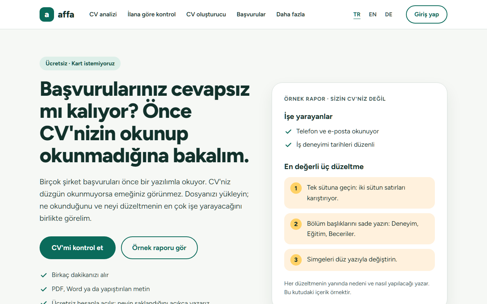
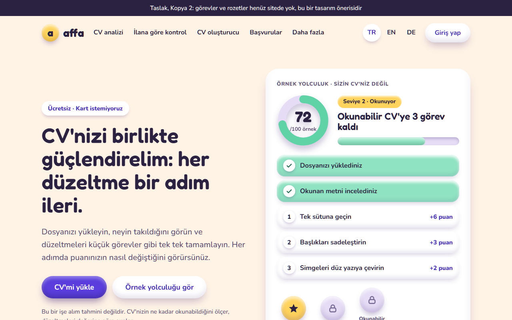
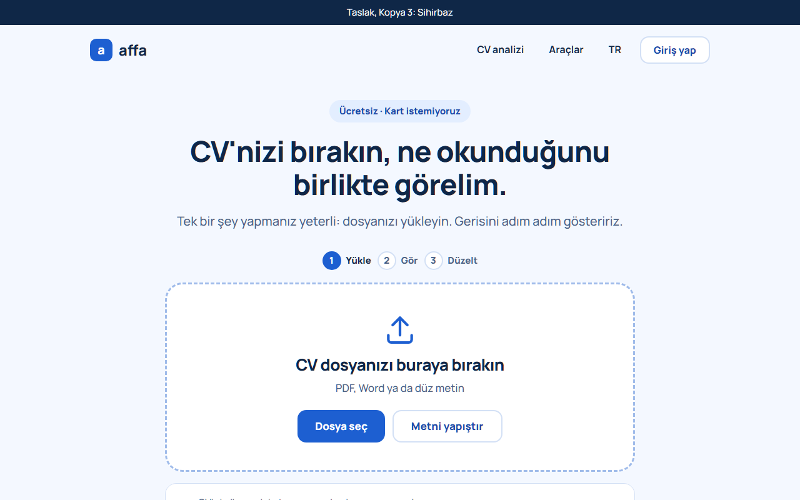
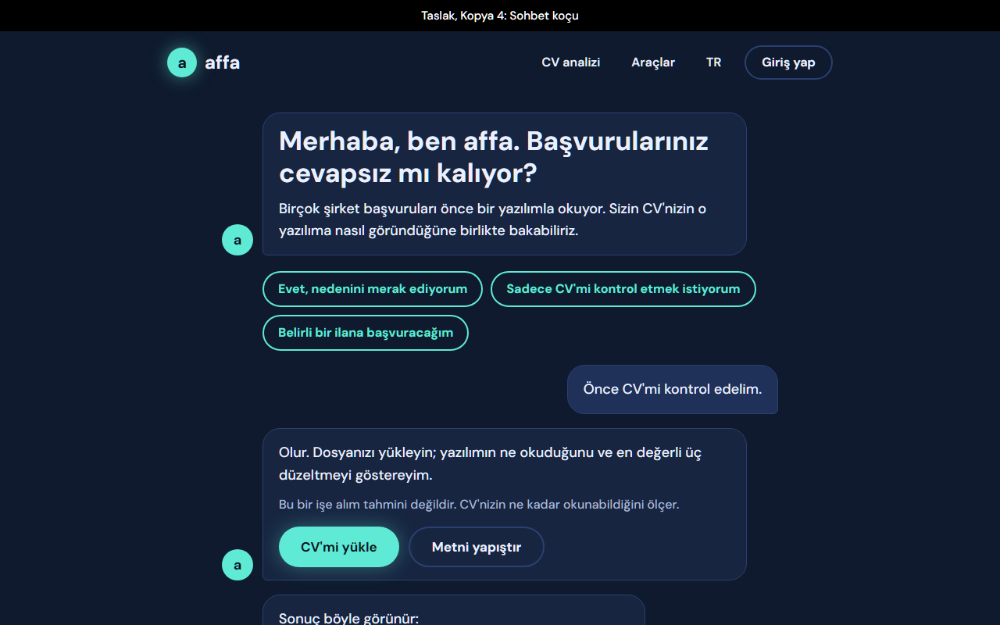
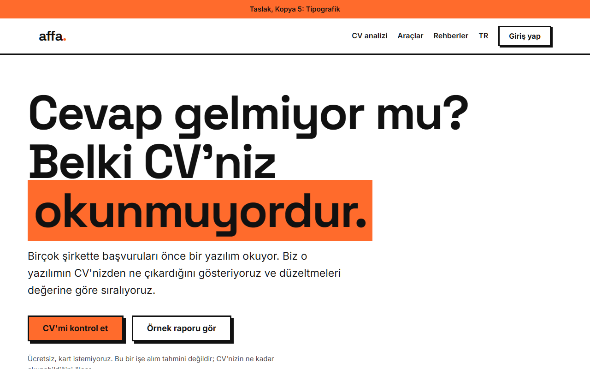
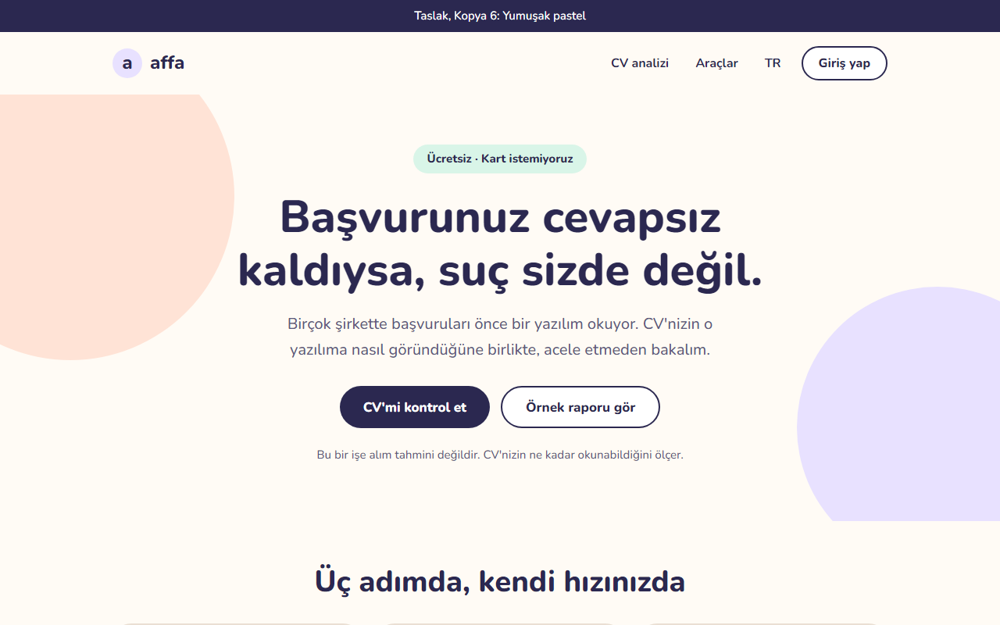
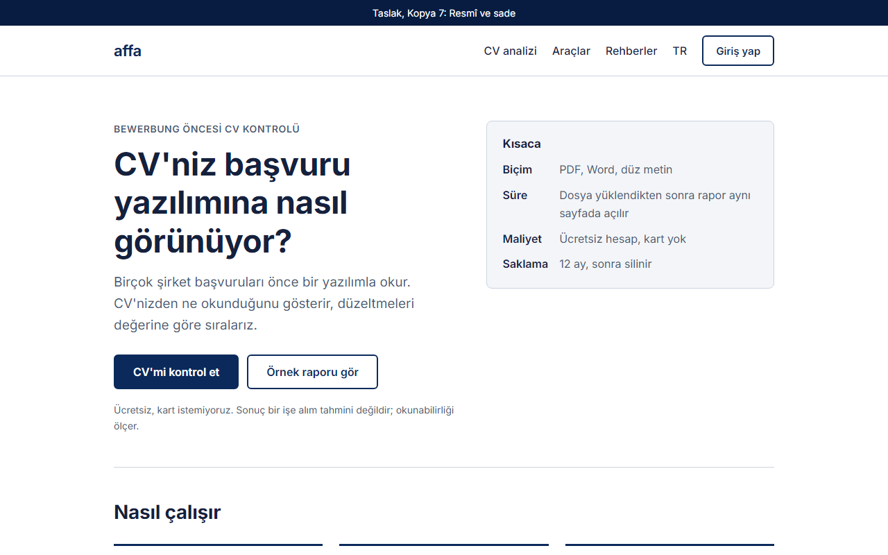
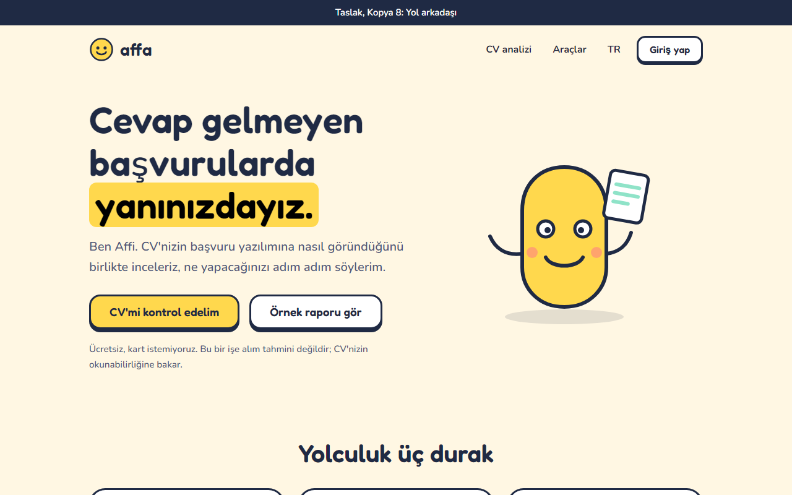

Yeni tasarım seçenekleri
Aynı ana sayfanın sekiz farklı yorumu. Her birini açın, telefonda ve bilgisayarda gezin, sonra hangisini en çok beğendiğinizi söyleyin.

Seçenek 2
Oyunlaştırma ve hamur 3B
Yumuşak, şişkin yüzeyler. Görevler, rozetler ve ilerleme halkası.





Seçenek 7
Resmî ve sade
Beyaz ve lacivert, tablolu rapor. Almanya'ya başvuranlar için düzenli ve ciddi.

Seçenek 8
Yol arkadaşı
Çizilmiş bir karakter (Affi) sizi adım adım yönlendirir. Kalın çerçeveler, sıcak sarı.
Bunlar taslaktır: düğmeler ve bağlantılar henüz bir yere gitmez, sayfadaki puanlar, görevler ve rozetler örnektir.